용접기사 (2017-08-27 기출문제)
1과목: 기계제작법
1. 다음 절삭유제의 사용목적으로 옳지 않은 것은?
- 냉각작용
- 윤활작용
- 방청작용
- 마모작용
(정답률: 69%)

2. 아크 용접부의 결함 중 용접봉의 용융점이 모재의 용융점보다 낮을 때와 용접 전류가 부족할 때 생기는 결함은?
- 오버랩
- 스패터
- 언더컷
- 슬래그 섞임
(정답률: 69%)
3. 슈퍼 피니싱(super finishing)에 관한 설명으로 틀린 것은?
- 숫돌을 진동시키면서 가공물을 가공하는 방법이다.
- 가공면은 매끈하고 방향성이 있으며 또한 가공에 의한 표면의 변질층이 매우 크다.
- 원통형의 외면, 내면, 평면 등의 가공에 쓰이고, 특히 중요한 축의 베어링 접촉부 및 각종 게이지의 가공에 사용된다.
- 입도가 작고, 연한 숫돌 입자를 낮은 압력으로 가공물의 표면에 가압하면서 매끈한 표면으로 가공한다.
(정답률: 63%)
4. 연삭숫돌 결합체의 기호에 대한 설명으로 틀린 것은?
- V - 비트리파이드
- S - 실리케이트
- R - 레지노이드
- E - 셸락
(정답률: 36%)
5. 주조에서 도가니로의 규격으로 옳은 것은?
- 1시간에 용해할 수 있는 구리의 중량으로 표시하며, N번(#N)이라 한다.
- 1회에 용해할 수 있는 구리의 중량으로 표시하며, N번(#N)이라 한다.
- 1시간에 용해할 수 있는 주철의 중량으로 표시하며, N번(#N)이라 한다.
- 1회에 용해할 수 있는 주철의 중량으로 표시하며, N번(#N)이라 한다.
(정답률: 46%)
6. 절삭공구로 공박물을 가공 시 유동형 칩이 발생하는 조건으로 틀린 것은?
- 경사각이 클 때
- 절삭깊이가 클 때
- 절삭속도가 빠를 때
- 연성재료를 가공할 때
(정답률: 47%)
7. 지름 10mm의 드릴로 연강판에 구멍을 뚫을 때 절삭속도가 62.8m/min이라면 드릴의 회전수는 약 몇 rpm인가?
- 1000
- 2000
- 3000
- 4000
(정답률: 59%)
8. 금속을 소성가공할 때, 열간가공과 냉간가공을 구분하는 온도는?
- 변태점 온도
- 담금질 온도
- 재결정 온도
- 어닐링 온도
(정답률: 61%)
9. 다음 그림과 같이 선반에서 공작물을 절삭할 때 편위량은 몇 mm인가?
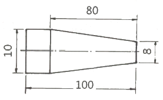
- 0.0025
- 1.25
- 5
- 12.5
(정답률: 59%)
10. 열처리 종류 중 풀림(annealing)방법의 종류가 아닌 것은?
- 구상화 풀림
- 완전 풀림
- 항온 풀림
- 냉각 풀림
(정답률: 55%)
11. 다음 중 래핑(lapping)의 특징으로 틀린 것은?
- 내식성 및 내마모성이 감소된다.
- 거울 같은 가공면을 얻을 수 있다.
- 정밀도가 높은 제품을 만들 수 있다.
- 미끄럼 면이 원활하게 되고 마찰계수가 적어진다.
(정답률: 66%)
12. 제품 가공을 위한 성형 다이를 주축에 장착하고, 소재의 판을 밀어붙인 후 회전시키면서 롤러, 스틱으로 가압하여 성형하는 가공법은?
- 스피닝(spinning)
- 스탬핑(stamping)
- 코이닝(coining)
- 하이드로포밍(hydroforming)
(정답률: 55%)
13. 다음 중 길이측정기의 종류가 아닌 것은?
- 마이크로미터
- 하이트 게이지
- 버니어캘리퍼스
- 오토 콜리메이터
(정답률: 61%)
14. 외측 마이크로미터 측정면의 평면도 검사에 필요한 기기는?
- 옵티컬 플랫
- 다이얼 게이지
- 플러그 게이지
- 컴비네이션 세트
(정답률: 60%)
15. 구성인선(built-up edge)의 방지책에 대한 설명으로 틀린 것은?
- 윤활성이 좋은 절삭유를 사용한다.
- 경사각(rake angle)을 크게 한다.
- 절삭속도를 빠르게 한다.
- 절삭 깊이를 크게 한다.
(정답률: 62%)
16. 불활성 가스 텅스텐 아크용접에 사용되는 텅스텐 봉의 역할은?
- 전극으로서의 역할만 하고 녹지는 않는다.
- 전류밀도를 증가시키며 녹아서 용접부에 보충된다.
- 전극으 역할도 하고, 녹아서 보충재의 역할도 한다.
- 모재 표면에 융착하여 산화막을 형성하는 역할을 한다.
(정답률: 72%)
17. 구멍의 내면을 정밀하게 다듬는 가공법으로 공구에 회전운동과 동시에 축 방향으로 왕복 운동을 하게 하여 보링, 리머가공, 내면연삭을 한 구멍의 진원도, 진직도, 표면 거칠기를 능률적으로 개선하기 위한 가공법은?
- 슈퍼 피니싱
- 숏 피닝
- 호닝
- 래핑
(정답률: 60%)
18. 강의 담금질에서 가장 담금질성을 좋게 하는 원소들로 짝지어진 것은?
- Al, Cr, Cu, Mg
- Cu, Si, Sb, Mg
- Cr, Mn, Mo, V
- Si, W, Ti, Sn
(정답률: 48%)
19. NC 공작기계에서 메모리에 기록된 정보를 받아 펄스를 발생시켜 서보기구에 전달함으로써 NC기계를 제어하는 장치는?
- 엔코더
- 리졸버
- 컨트롤러
- 볼 스크루
(정답률: 69%)
20. 주물표면이 깨끗하고 정도가 높으며, 기계가공 여유가 필요치 않아 비철금속의 얇은 주물에 사용하는 주조법은?
- 셸 몰드법
- 다이 캐스팅법
- 이산화탄소법
- 인베스트먼트법
(정답률: 62%)
2과목: 재료역학
21. 그림과 같은 평면응력상태에서 σx=300MPa, σy=200MPa이 작용하고 있을 대 재료 내에 생기는 최대전단응력(Tmax)의 크기와 그 방향(θ)은?
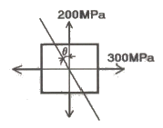
- Tmax=300MPa, θ=90°
- Tmax=200MPa, θ=0°
- Tmax=100MPa, θ=22.5°
- Tmax=50MPa, θ=45°
(정답률: 32%)
22. 폭과 높이가 80mm인 정사각형 단면의 회전 반지름(radius of gyration)은 약 몇 m인가?
- 0.034
- 0.046
- 0.023
- 0.017
(정답률: 36%)
23. 지름 50mm의 속이 찬 환봉축이 1228Nㆍm의 비틀림 모멘트를 받을 대 이 축에 생기는 최대 비틀림 응력은 약 몇 MPa인가?
- 20
- 30
- 40
- 50
(정답률: 23%)
24. 단면 지름이 3cm인 환봉이 25kN의 전단하중을 받아서 0.00075rad의 전단변형률을 발생시켰다. 이때 재료의 세로탄성계수는 약 몇 GPa인가? 9단, 이 재료의 포아송 비는 0.3이다.)
- 75.5
- 94.4
- 122.6
- 157.2
(정답률: 31%)
25. 길이 ℓ의 외팔보의 전 길이에 걸쳐서 w의 등분포 하중이 작용할 때 최대 굽힘모멘트(Mmax)의 값은?
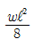
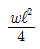
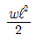
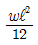
(정답률: 26%)
26. 그림과 같은 구조물에 C점과 D점에 각각 20kN, 40kN의 하중이 아랫방향으로 작용할 때 상단의 반력 Ra는 약 몇 kN인가?
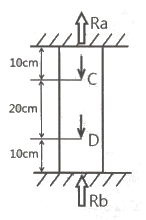
- 25
- 30
- 20
- 35
(정답률: 34%)
27. 철도용 레일의 양단을 고정한 후 온도가 20℃에서 5℃로 내려가면 발생하는 열응력은 약 몇 MPa인가? (단, 레일재료의 열팽창계수 a=0.000012/℃이고, 균일한 온도 변화를 가지며, 탄성계수 E = 210GPa이다.)
- 50.4
- 37.8
- 31.2
- 28.0
(정답률: 36%)
28. 비중량 r =7.85×104N/m3인 강선을 연직으로 매달려고 할 때 자중에 의해서 견딜 수 있는 최대길이는 약 몇 m인가? (단, 강선의 허용인장응력은 12MPa이다.)
- 152
- 228
- 3⑤
- 382
(정답률: 24%)
29. 그림과 같은 외팔보의 C점에 100kN의 하중이 걸릴 때 B점의 처짐량은 약 몇 cm인가? (단, 이 보의 굽힘강성(EI)는 10kNㆍm2이다.)
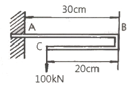
- 0
- 0.09
- 0.16
- 0.64
(정답률: 26%)
30. 다음 부정정보에서 B점에서의 반력은? (단, 보의 굽힘강성 EI는 일정하다.)
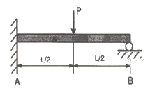
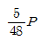
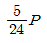
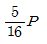
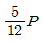
(정답률: 45%)
31. 그림과 같은 외팔보에서 허용굽힘응력은 50kN/cm2이라 할 때, 최대 하중 P는 약 몇 kN인가? (단, 보의 단면은 10cm×10cm이다.)
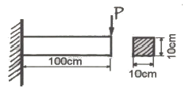
- 110.5
- 100.0
- 95.6
- 83.3
(정답률: 24%)
32. 그림과 같이 일단고정 타잔자유단인 기둥의 좌굴에 대한 임계하중(buckling load)은 약 몇 kN인가? (단, 기둥의 세로탄성계수는 300GPa이고 단면(폭×높이)은 2cm×2cm의 정사각형이다. 오일러의 좌굴하중을 적용한다.)
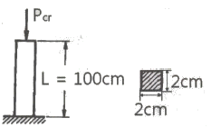
- 34
- 20.2
- 9.8
- 5.8
(정답률: 34%)
33. 축에 발생하는 전단응력은 r, 축에 가해진 비틀림 모멘트는 T라 할 때 축 지름 d를 나타내는 식은?
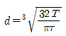
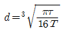
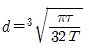
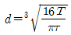
(정답률: 35%)
34. 다음 그림과 같이 2가지 재료로 이루어진 길이 L의 환봉이 있다. 이 봉에 비틀림 모멘트 T가 작용할 때 이 환봉은 몇 rad로 비틀림이 발생하는가? (단, 재질 a의 가로탄성계수는 Ga, 재질 a의 극간성모멘트는 Ipa이고, 재질 b의 가로탄성계수는 Gb, 재질 b의 극관성모멘트는 Ipb다.)
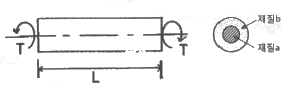
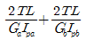
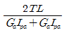
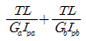
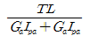
(정답률: 25%)
35. 그림과 같이 선형적으로 증가하는 불균일 분포하중을 받고 있는 단순보의 전당력선도로 적합한 것은?
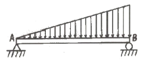
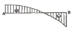
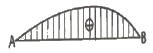
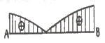
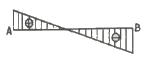
(정답률: 37%)
36. 그림과 같이 재료와 단면이 같고 길이가 서로 다른 강봉에 지지되어 있는 강체 보에 하중을 가했을 때 A, B에서의 변위의 비 δA/δB는?
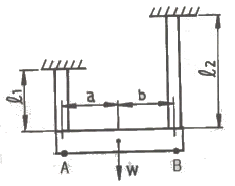
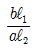
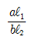
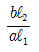
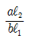
(정답률: 36%)
37. 단면계수가 0.01m3인 사각형 단면의 양단고정보가 2m의 길이를 가지고 있다. 중앙에 최대 몇 kN의 집중하중을 가할 수 있는가? (단, 재료의 허용굽힘응력은 80MPa이다.)
- 800
- 1600
- 2400
- 3200
(정답률: 16%)
38. 지름 2cm, 길이 50cm인 원형단면의 외팔보자유단에 수직하중 P=1.5kN이 작용할 때, 하중 P로 인해 생기는 보속의 최대전단응력은 약 몇 MPa인가?
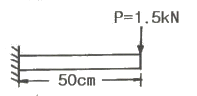
- 3.19
- 6.37
- 12.74
- 15.95
(정답률: 34%)
39. 안지름이 25mm, 바깥지름이 30mm인 중공강철관에 10kN의 축인장 하중을 가할 때 인장응력은 몇 MPa인가?
- 14.2
- 20.3
- 46.3
- 145.5
(정답률: 33%)
40. 그림과 같이 반지름이 5cm인 원형 단면을 갖는 ㄱ자 프레임의 A점 단면의 수직응력(σ)은 약 몇 MPa인가?
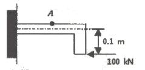
- 79.1
- 89.1
- 99.1
- 109.1
(정답률: 29%)
3과목: 용접야금
41. 서브머지드 아크 용접에서 사용하는 용제의 구비조건으로 틀린 것은?
- 용접 후 슬래그 이탈성이 좋을 것
- 탈산, 탈황 등의 정련작용이 발생하지 않을 것
- 아크 발생을 안정시켜 안정된 용접을 할 수 있을 것
- 적당한 점성을 가지고 있어 양호한 비드를 얻을 수 있을 것
(정답률: 65%)
42. 다음 금속 중 융점이 가장 높은 것은?
- Cu
- Ti
- Mg
- Al
(정답률: 58%)
43. 다음 중 표면 경화 열처리 방법이 아닌 것은?
- 침탄법
- 오스포밍법
- 화염 경화법
- 방전 경화법
(정답률: 55%)
44. Ni 36%를 함유하는 Fe-Ni 합금으로, 온도에 따라 길이가 불변하여 표준자, 바이메탈용으로 쓰이는 것은?
- 인바
- 인코넬
- 모넬메탈
- 히스텔로이
(정답률: 57%)
45. 알루미늄 합근이나 구리 합금의 예열온도로 가장 적당한 온도범위는?
- 40~75℃
- 80~150℃
- 200~300℃
- 400~550℃
(정답률: 45%)
46. 주철의 성장 원인으로 옳지 않은 것은?
- 균일한 가열에 의한 팽창
- 시멘타이트릐 흑연화에 의한 팽창
- Al변태에서 부피 변화로 인한 팽창
- 페라이트 중에 고용되어 있는 Si의 산화에 의한 팽창
(정답률: 28%)
47. 황이 층상으로 존재하는 강을 서브머지드 아크 용접할 때 발생하는 고온 균열은?
- toe crack
- hill crack
- sulfur crack
- under bead crack
(정답률: 55%)
48. 체심입방격자(BCC)에 대한 설명으로 옳지 않은 것은?
- 원자충진율은 68%이다.
- 배위수는 8, 격자내 원자수는 2개이다.
- Mg, Zn, Ti, Cd, Zr은 BCC 결정구조이다.
- 면심입방격자보다 전연성은 작으나 강한 성질을 가진다.
(정답률: 41%)
49. 두 금속의 원자 크기가 비슷한 금속들을 합금하는 경우 어떤 금속성분의 결정격자의 원자가 다른 성분의 결정격자 원소와 위치가 바뀌어져 고용되는 것은?
- 전율 고용체
- 침입형 고용체
- 치환형 고용체
- 규칙격자형 고용체
(정답률: 57%)
50. X선에 의한 결정구조 해석 사용법에 해당되지 않는 것은?
- 희절법
- 반사법
- 투과법
- 진공법
(정답률: 44%)
51. Fe-C계 평형상채도에서 공석변태를 설명한 것은?
- 오스테나이트가 페라이트와 시멘타이트의 혼합조직으로 변하는 변태이다.
- 오스테나이트가 펄라이트와 트루스타이트의 혼합조직으로 변하는 변태이다.
- 오스테나이트가 소르바이트와 마텐자이트의 혼합조직으로 변하는 변태이다.
- 오스테나이트가 마텐자이트와 트루스타이트의 혼합조직으로 변하는 변태이다.
(정답률: 45%)
52. 다음 중 적열취성의 주원인이 되는 원소는?
- P
- C
- S
- Si
(정답률: 57%)
53. 강의 충격치가 온도의 강하와 더불어 어떤 한계온도에 도달하면 급격히 감소하여 취성이 발생하는 온도를 무엇이라 하는가?
- 천이온도
- 취성온도
- 저온온도
- 급감온도
(정답률: 55%)
54. 일반적인 금속 결정 구조에 관한 내용으로 틀린 것은?
- 면심입방격자와 금속은 연성이 크다.
- 체심입방격자의 금속은 강도가 크다.
- 조밀육방격자의 금속은 소성 가공성이 나쁘다.
- 조밀육방격자의 금속은 알루미늄, 니켈, 구리이다.
(정답률: 52%)
55. 다음 중 비드 밑 균열의 방지 대책으로 적절하지 않은 것은?
- 예열과 후열을 실시한다.
- 과도한 수소 흡습을 방지한다.
- 저수소계의 용접봉을 사용한다.
- 용착 금속 속의 확산성 수소를 많이 발생시킨다.
(정답률: 65%)
56. 과포화 고용체를 상온 또는 고온에서 유지함으로써 시간의 경과에 따라 랍금의 성질이 변화하여 경화하는 현상은?
- 상호경화
- 시효경화
- 석출경화
- 층상경화
(정답률: 59%)
57. 다음 금속 중 선팽창 계수가 가장 큰 금속은?
- 주철
- 인바
- Pt-Ir
- 알루미늄
(정답률: 33%)
58. 다음 금속침투법 중 철과 아연을 접촉시켜 내식성이 좋은 표면층을 형성하는 것은?
- 크로마이징
- 칼로라이징
- 세라다이징
- 실리코나이징
(정답률: 47%)
59. 구리에 5~20%의 아연을 첨가한 합금으로, 색이 아름답고 연성이 커서 장식품, 금박 대용으로 쓰이는 것은?
- 포듬
- 톰백
- 문쯔메탈
- 콘스탄탄
(정답률: 59%)
60. 냉간 가공한 금속 재료를 가열하여 풀림을 하면 가공에 의하여 변화한 금속의 성질이 가공 전의 상태로 되돌아가는데, 이 과정과 관련이 없는 것은?
- 슬립
- 회복
- 재결정
- 결정입자의 성장
(정답률: 31%)
4과목: 용접구조설계
61. 용접 구조물의 조립순서를 정할 때 고려할 사항으로 틀린 것은?
- 가용접용 정반이나 지그를 적절히 채택한다.
- 잔류응력이 증가될 수 있는 방법을 선택한다.
- 작업 환경을 고려하여 용접자세를 편하게 한다.
- 이음의 형상을 고려하여 적절한 용접법을 선택한다.
(정답률: 67%)
62. 일반적인 각변형의 방지대책으로 틀린 것은?
- 구속 지그를 활용한다.
- 역변형 시공법을 사용한다.
- 용접속도가 빠른 용접법을 이용한다.
- 가능한 용접봉 지름이 작은 것을 이용하여 패스 수를 늘린다.
(정답률: 56%)
63. 다음 중 반발높이로 경도 값을 측정하는 경도계는?
- 쇼어 경도계
- 브리넬 경도계
- 로크웰 경도계
- 비커스 경도계
(정답률: 54%)
64. 가늘고 긴 망치를 이용하여 용접부를 연속으로 타격해줌으로서 표면에 소성 변형을 주어 잔류응력을 완화시키는 방법은?
- 풀림
- 피닝
- 노칭
- 그라인딩
(정답률: 64%)
65. AW-500인 용접기 12대를 설치하고자 하는 공장에서 어느 정도의 전원변압기를 설치하는 것이 가장 적당한가?(단, 용접기의 평균 전류는 350 A이고, 500 A의 개로 전압은 80 V이며 사용률은 50% 이다)
- 158kVA
- 168kVA
- 178kVA
- 188kVA
(정답률: 29%)
66. 다음 그림은 어떤 용접 이음을 나타낸 것인가?
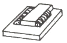
- 맞대기 이음
- 측면 필릿 이음
- 전면 필릿 이음
- 양면 받침쇠 이음
(정답률: 63%)
67. 용접 후 작업검사와 관련된 내용으로 가장 거리가 먼 것은?
- 변형교정
- 후열처리방법
- 균열 및 치수 확인
- 용접설비의 용접기기
(정답률: 60%)
68. 다음 중 용접부의 연성 결함을 조사하기 위하여 사용하는 시험법으로 가장 적합한 것은?
- 낙하시험
- 파면시험
- 내압시험
- 굽힘시험
(정답률: 64%)
69. 용접부의 시험 중 용접성 시험법이 아닌 것은?
- 인장시험
- 노치취성시험
- 용접연성시험
- 용접균열시험
(정답률: 24%)
70. 다음 중 비틀림 변형 방지법으로 틀린 것은?
- 지그를 활용하며 집중 용접을 피해야 한다.
- 표면 덧붙이를 필요 이상 주지 않아야 한다.
- 가공 및 정밀도에 주의하며, 조립 및 이음의 맞춤을 정확히 해야 한다.
- 용접순서는 구속이 없는 자유단에서부터 구속이 큰 부분으로 진행해야 한다.
(정답률: 61%)
71. 용접이음 설계 시 일반적인 주의사항으로 옳은 것은?
- 능률이 좋은 위보기 용접을 많이 할 수 있도록 설계한다.
- 용접작업에 지장을 주지 않도록 충분한 공간을 두어야 한다.
- 강도가 약한 맞대기 용접을 피하고 될 수 있는 대로 필릿 용접을 하도록 한다.
- 용접선은 될 수 있는 한 교차 되도록 하고 한쪽으로 집중되게 접근하여 설계한다.
(정답률: 55%)
72. 용접길이를 짧게 나누어 간격을 두면서 용접하는 방법으로 피용접물 전체에 변형이나 잔류응력을 적게 발생하도록 하는 용착방법은?
- 전진법
- 후진법
- 스킵법
- 빌드업법
(정답률: 63%)
73. 피복 아크 용접에서 용접전류 300A, 아크전압 27V, 용접속도가 12cm/min 인 경우 용접의 단위 길이 1cm 당 발생하는 용접 입열은 약 몇 J/cm 인가?
- 675
- 8000
- 4⑤00
- 97200
(정답률: 44%)
74. 용접 결함의 보수 방법으로 적당하지 않은 것은?
- 언더컷 부분은 굵은 용접봉으로 재용접한다.
- 오버 랩의 경우 그 부분을 깎아내고 재용접한다.
- 슬래그 석임 부분은 바로 깎아내고 재용접한다.
- 균열의 경우 균열 양 끝에 판 두께 정도 떨어진 부분에 정지구멍을 뚫고 균열을 깎아내고 재용접한다.
(정답률: 53%)
75. 용접 후 용접변형을 교정하는 방법이 아닌 것은?
- 피닝법
- 역변형법
- 가열 후 해머링하는 방법
- 절단에 의해 성형하고 재용접하는 방법
(정답률: 40%)
76. 용접 변형을 방지하기 위한 방법이 아닌 것은?
- 풀림에 의한 변형방지
- 구속법에 의한 변형방지
- 냉각법에 의한 변형방지
- 역 변형에 의한 변형방지
(정답률: 23%)
77. 용접 기 잔류응력을 경감시키기 위한 방법으로 틀린 것은?
- 예열을 이용할 것
- 적당한 지그를 이용할 것
- 용착금속의 양을 많게 할 것
- 적당한 용접순서를 정할 것
(정답률: 65%)
78. 자분 탐상 검사법에서 이용하는 자화방법이 아닌 것은?
- 코일법
- 극간법
- 축통전법
- 투과도계법
(정답률: 48%)
79. 다음 용접 결함 중 구조상 결함에 속하지 않는 결함은?
- 기공
- 언더컷
- 형상 불량
- 용입 불량
(정답률: 55%)
80. 다음 변형 중 면외 변형의 종류가 아닌 것은?
- 회전 변형
- 좌굴 변형
- 비틀림 변형
- 세로 굽힘 변형
(정답률: 38%)
5과목: 용접일반 및 안전관리
81. 가스 및 아크 절단의 분류 중 아크 절단에 포함되지 않는 것은?
- 티그 절단
- 분말 절단
- 미그 절단
- 플라스마 제트 절단
(정답률: 50%)
82. 연강용 피복 아크 용접봉에 주로 사용되는 심선 재료는?
- 저탄소 킬드강
- 저탄소 림드강
- 고탄소 킬드강
- 중탄소 세미킬드강
(정답률: 43%)
83. 연강용 피복아크 용접봉 중 내균열성이 가장 우수한 것은?
- E4303
- E4311
- E4316
- E4327
(정답률: 52%)
84. 일반적인 용접의 특징으로 옳은 것은?
- 기밀, 수밀, 유밀성이 우수하며 이음효율이 높다.
- 작업공정이 복잡하고, 보수 및 수리가 곤란하다.
- 용접사의 기술에 관계없이 초보자도 균일한 품질을 얻을 수 있다.
- 저온 취성이 발생하지 않고, 재질의 변형이나 잔류응력이 발생하지 않는다.
(정답률: 62%)
85. 점용접(spot welding)에서 앵글재와 같이 용접위치가 나쁠 때 사용하는 가장 적합한 전극팁은?
- F형 팁(flat type)
- R형 팁(radius type)
- P형 팁(pointed type)
- E형 팁(eccentric type)
(정답률: 24%)
86. 용접에서 피복제의 역할이 아닌 것은?
- 전기절연을 방지한다.
- 산화, 질화를 방지한다.
- 아크의 안정성을 좋게 한다.
- 용착금속의 기계적 성질을 좋게 한다.
(정답률: 47%)
87. 피복 아크 용접봉의 용융속도에 관한 내용으로 틀린 것은?
- 용융속도는 아크전류가 클수록 비례하여 커진다.
- 용융속도는 용접봉의 지름이 클수록 비례하여 커진다.
- 용융속도는 용접봉 쪽의 전압강하가 클수록 비례하여 커진다.
- 용융속도는 단위 시간당 소비되는 용접봉의 무게로 나타낸다.
(정답률: 35%)
88. 대형 파이프의 원주용접을 연속적으로 아래보기 자세로 용접하기 위해 모재의 외경을 지지하면서 회전시키는 자동용접 기구는?
- 스트롱 백
- 터닝 롤러
- 바이스 지그
- 플레이트 지그
(정답률: 60%)
89. 용접용 홀더 중 안전 홀더로 작업 시 전격의 위험이 적어 주로 사용하는 것은?
- A형 홀더
- B형 홀더
- C형 홀더
- D형 홀더
(정답률: 48%)
90. 다음 중 아세틸렌 가스 용기의 내압 시험 압력은?
- 충전 압력 5kgf/cm2 이상
- 충전 압력 10kgf/cm2 이상
- 충전 압력 (15℃, 15kgf/cm2)× 3 이상
- 충전 압력 (35℃, 150kgf/cm2)× 5/3 이상
(정답률: 35%)
91. 용접작업에 관한 안전사항 중 틀린 것은?
- 용접 시에는 반드시 보호장구를 착용할 것
- 용접작업장 주위에는 인화물질을 두지 말 것
- 아연도금 강판의 용접 시에는 안전상 환기장치를 차단시키고 할 것
- 빈 용기를 용접 할 때는 속에 위험한 가스나 증기가 있는지 점검할 것
(정답률: 60%)
92. 다음 중 탄산가스 아크 용접의 특징으로 틀린 것은?
- 저렴한 이산화탄소를 사용할 수 있으며 자동 반자동의 고속 용접이 가능하다.
- 용입이 깊고 용착금속의 기계적 성질이 우수하다.
- 전자세로 용접이 가능하고, 용접 후의 처리가 간단하다.
- 불가시 아크이므로 용융지를 살필 수 없어 시공이 불편하다.
(정답률: 57%)
93. 연강이나 저합금강을 용접한 후 잔류응력제거를 위한 열처리를 하게 된다. 다음 중 노내 풀림 열처리의 최적온도 범위는?
- 약 200 ~ 250℃ 정도
- 약 350 ~ 450℃ 정도
- 약 550 ~ 650℃ 정도
- 약 800 ~ 850℃ 정도
(정답률: 24%)
94. TIG 용접 시 산하 방지를 위한 뒷받침(backing)이 아닌 것은?
- 용제 뒷받침(flux backing)
- 금속 뒷받침(metal backing)
- 불활성 가스 뒷받침(inert gas backing)
- 컴퍼지션 뒷받침(composition backing)
(정답률: 28%)
95. 아크용접에서 직류정극성의 특징으로 틀린 것은?
- 비드 폭이 좁다.
- 모재의 용입이 깊다.
- 용접봉의 녹음이 느리다.
- 박판, 주철, 비철금속의 용접에 주로 사용된다.
(정답률: 43%)
96. 다음 중 알루미늄이 용접성에 관한 설명으로 옳은 것은?
- 표면이 산화되지 않는다.
- 가열하면 색깔이 갈색으로 변한다.
- 모재표면의 산화가 발생되지 않는다.
- 가열되면 모재가 약해지고 부서지기 쉽다.
(정답률: 42%)
97. 18 -8형 스테인리스강의 납땜 시 모재의 적정 가열온도 범위로 가장 적당한 것은?
- 500~700℃
- 1000~1300℃
- 1360~1500℃
- 1500℃ 이상
(정답률: 43%)
98. 용접용 재료가 갖추어야 할 특성으로 틀린 것은?
- 양호한 아크를 제공해야 한다.
- 용접 금속을 분리할 수 있어야 한다.
- 용착을 형성하는데 도움이 되어야 한다.
- 점성, 용융온도 등 물리적 성질이 적합해야 한다.
(정답률: 65%)
99. 반자동 탄산가스 아크 용접에서 전진법과 후진법의 특징에 대한 설명 중 옳은 것은?
- 후진법은 깊은 용입을 얻을 수 있다.
- 전진법은 비드가 높고 볼록한 비드가 얻어진다.
- 후진법은 용접선이 잘 보이기 때문에 운봉을 정확하게 할 수 있다.
- 전진법은 후진법에 비해 스패터가 적게 튀고, 비드의 폭, 높이 등을 억제하기 쉽다.
(정답률: 23%)
100. 정격 2차 전류 300A, 정격 사용률 40%, 정격부하 전압강하 35V, 최고 2차 무부하 전압 85V의 용접기를 사용하여 200A로 용접하는 경우 허용사용률은?
- 60%
- 70%
- 80%
- 90%
(정답률: 25%)